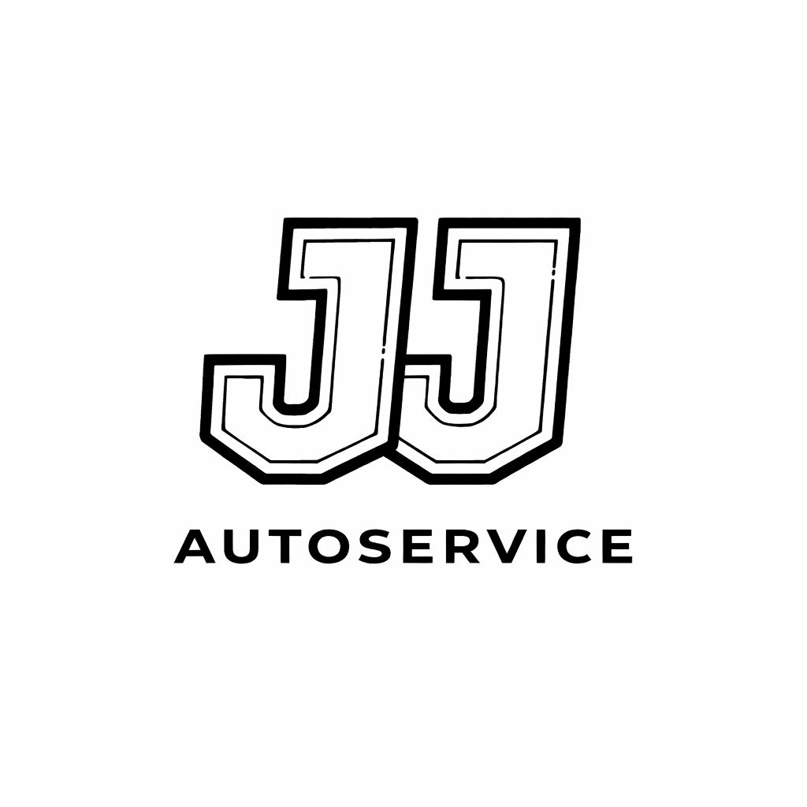
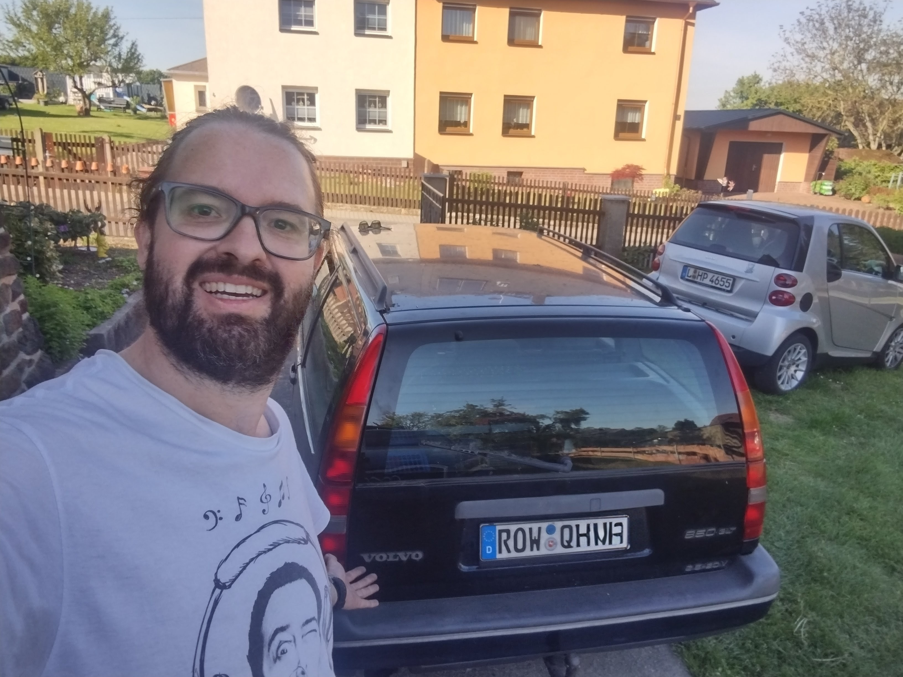
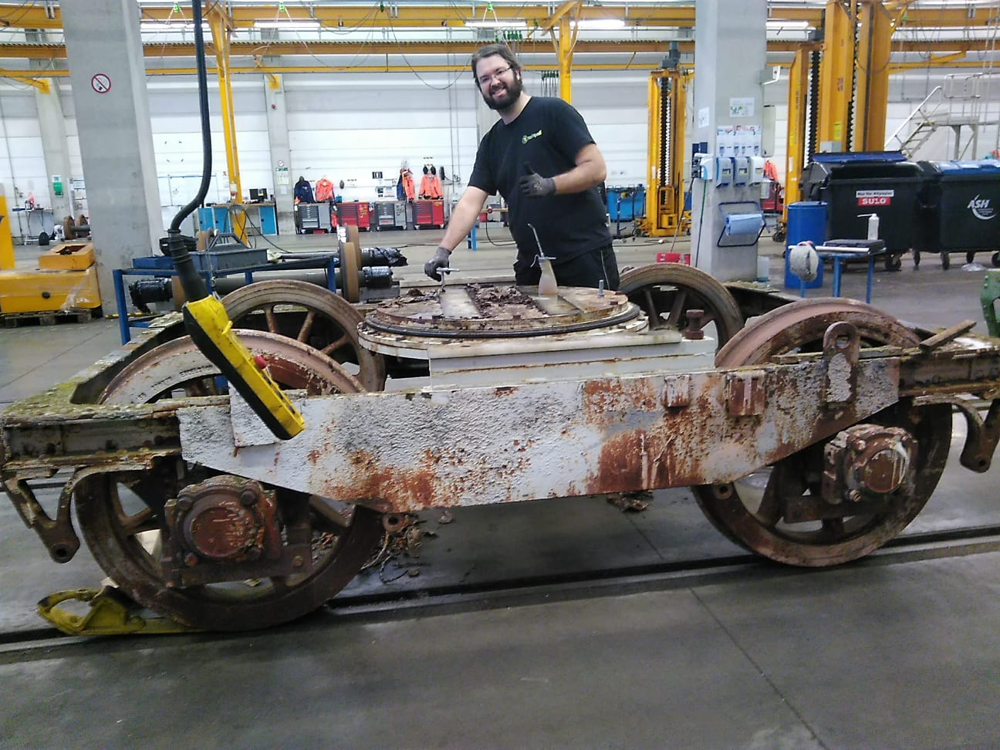

Mobile Car Service – Berlin
WhatsApp

My name is Jorge. I hold a degree in Mechanical Engineering from UTFPR and I am a car mechanic by passion, with over 25 years of experience in automotive and industrial maintenance and repairs.
I work with a strong focus on accurate diagnostics, efficient solutions, and complete transparency with my clients. Before replacing any part, I always analyze the real cause of the problem.
My goal is to provide a reliable, clear and fair service, always prioritizing quality, safety and cost-effectiveness.
I understand that the stress and fast pace of everyday life often make it difficult to keep your vehicle properly maintained. Nothing is more frustrating than wasting time at a workshop for a small issue that keeps bothering you while driving. That is why I bring my service directly to you — quickly, efficiently and without complications.
Mobile diagnostic service and quick minor repairs directly at your location in Berlin.
Service Area: Berlin and surroundings
Email: info@jj-autoservice.de
Phone: +49 163 978 2039